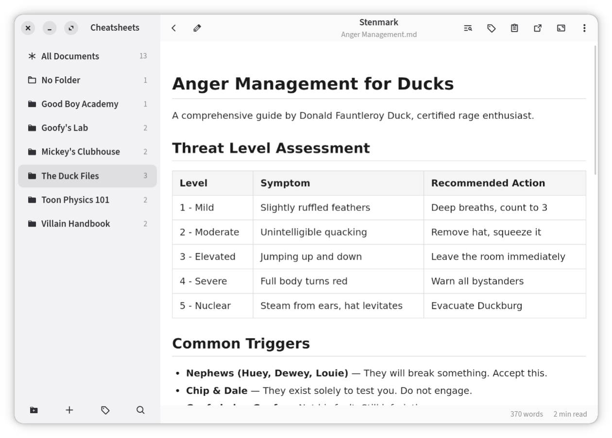
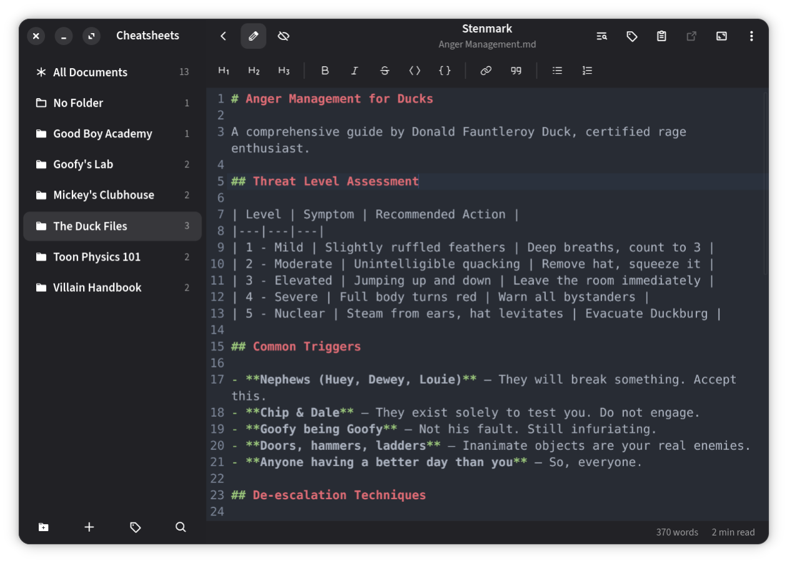

Stenmark
Your markdown librarian. A GTK4 Markdown reader, organizer and editor.

Stenmark is not on Flathub: their policy doesn't allow AI-assisted apps, and
Stenmark is. This is its own Flatpak repository instead — add it once as a
remote, and new versions arrive with flatpak update like any
other app.
Install
flatpak remote-add --user stenmark https://mkay.github.io/stenmark-flatpak/stenmark.flatpakrepo
flatpak install stenmark de.singular.stenmarkYou also need Flathub
Only Stenmark itself is hosted here. The GNOME runtime it builds against comes from Flathub, so that remote has to exist too:
flatpak remote-add --if-not-exists --user flathub https://dl.flathub.org/repo/flathub.flatpakrepo
What it may read
Stenmark browses whole folders rather than one file at a time, so the
sandbox grants it your home directory, plus /media,
/run/media and /mnt for notes that live on a USB
stick or a mounted share. It is granted no network access at all: files are
read and rendered locally, and a link you click is handed to the portal,
which opens it in your own browser outside the sandbox.
Signatures
Every commit and the repository summary are GPG-signed. The public key is
embedded in the .flatpakrepo file above, so flatpak
verifies each update against it — an unsigned or tampered object is refused.
What is actually served here
repo/ is a static
OSTree repository in
archive-z2 mode. Every file is stored once under the hash of its
contents, so successive releases share everything unchanged and a client
downloads only what it is missing.
Debug symbols are not published — they roughly double the repository for something no user of a binary remote consumes. Build from source if you need them.